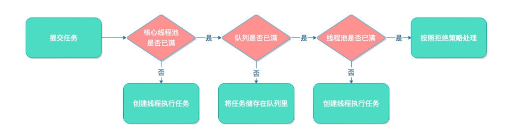

J.U.C之线程池
线程池应该是我们日常工作中用到的比较常见的并发组件，几乎所有需要异步或者并发执行任务的程序都可以使用线程池。
使用线程池的好处
在开发过程中，合理地使用线程池能够带来以下好处：
- 降低资源消耗：通过重复利用已创建的线程降低线程创建和销毁造成的消耗
- 提高相应速度：当任务到达是，任务可以不需要等到线程创建就能立即执行
- 提高线程的可管理性：线程是稀缺资源，如果无限制地创建，不仅会消耗系统资源，还会降低系统的稳定性，使用线程池可以进行统一分配、调优和监控
使用线程池
构造线程池
我们来看下线程池参数最全的构造函数，然后详细解释每个参数的意义：
public ThreadPoolExecutor(int corePoolSize,
int maximumPoolSize,
long keepAliveTime,
TimeUnit unit,
BlockingQueue<Runnable> workQueue,
ThreadFactory threadFactory,
RejectedExecutionHandler handler)
corePoolSize
核心线程数，当线程池里的线程数小于核心线程数时，如果有任务提交，即使线程池里有空闲线程，线程池也会新建线程来执行新任务。如果调用了线程池的prestartAllCoreThreads()方法，线程池会提前创建并启动所有核心线程。
maximumPoolSize
最大线程数，线程池的阻塞队列满了之后，如果还有任务提交，如果线程池的线程数小于最大线程数，则会新建线程来执行任务。注意，如果使用的是无界队列，该参数也就没有什么效果了。
keepAliveTime
线程空闲的时间，线程的创建和销毁是需要代价的，线程执行完任务后不会立即销毁，而是继续存活一段时间。默认情况下，该参数只有在线程数大于corePoolSize时才会生效。
unit
线程空闲时间的单位
workQueue
工作队列，当线程池里的线程数大于等于核心线程数，并且没有空闲线程时，如果有任务提交，那么这些任务会被存储在工作队列中。
工作队列是阻塞队列，可以选择一下几个阻塞队列：
- ArrayBlockingQueue：基于数组结构的有界阻塞队列，FIFO。
- LinkedBlockingQueue：基于链表结构的有界阻塞队列，FIFO。
- SynchronousQueue：不存储元素的阻塞队列，每个插入操作都必须等待一个移出操作，反之亦然。
- PriorityBlockingQueue：具有优先界别的阻塞队列。
threadFactory
用于创建线程的工厂。
handler
拒绝策略，当队列和线程池都满了，这时如果还有新任务提交，这时就必须采用拒绝策略来处理新提交的任务，线程池本身提供了4中拒绝策略：
- AbortPolicy：直接抛出异常，默认策略；
- CallerRunsPolicy：用调用者所在的线程来执行任务；
- DiscardOldestPolicy：丢弃阻塞队列中靠最前的任务，并执行当前任务；
- DiscardPolicy：直接丢弃任务；
当然我们也可以实现自己的拒绝策略，例如记录日志等等，实现RejectedExecutionHandler接口即可。
向线程池提交任务
线程池提供了2个方法让我们提交任务，分别是execute()和submit()方法。
execute()方法用于提交不需要返回值的任务，所以无法判断任务是否被线程池执行成功。
threadPool.execute(() -> {
System.out.println("execute");
});
submit()方法用于提交需要返回值的任务，提交任务后，线程池会返回一个Future类型的对象，通过这个对象可以判断任务是否执行成功、获取返回值等。
Future<String> future = threadPool.submit(() -> "submit");
try {
future.get();
} catch (InterruptedException e) {
log.error("InterruptedException", e);
} catch (ExecutionException e) {
log.error("ExecutionException", e);
}
提交一个新任务线程池的主要处理流程如下图所示：

关闭线程池
线程池提供了2个方法来关闭线程池，分别是shutdown()和shutdownNow()。
shutdown方法会将线程池的状态设置为SHUTDOWN状态，然后中断所有空闲的线程，不会中断正在执行任务的线程，所以shutdown并不一定会立即关闭线程池；而shutdownNow首先将线程池的状态设置为STOP状态，然后尝试中断所有空闲和忙碌的线程。相对而言shutdown方法更温和，所以关闭线程池一般使用shutdown方法。
关闭线程池后，如果主线程需要在线程池运行结束后再做一些其他操作，那么可以通过isTerminated()或awaitTermination(long timeout, TimeUnit unit)来判断线程池是否已经关闭。
threadPool.shutdown();
try {
while (!executor.awaitTermination(10, TimeUnit.SECONDS)) {}
} catch (InterruptedException e) {
log.error("wait executor shutdown error", e);
}
Executors
Java提供了工具类Executors来快速创建线程池，通过Executors创建的线程池分为如下几类。
FixedThreadPool
FixedThreadPool是一个固定线程数的线程池，核心线程数和最大线程数相等，线程池工作队列使用了LinkedBlockingQueue，由于没有指定大小，所以其容量是Integer.MAX_VALUE，这基本上是一个无界队列。
FixedThreadPool适用于处理提交任务不频繁的场景，可以根据实际情况来调整线程池的大小。如果任务大量提交，线程池来不及处理，任务会被存储在工作队列中，由于使用无界队列，如果存储的数据过多，有可能会发生OOM。
public static ExecutorService newFixedThreadPool(int nThreads) {
return new ThreadPoolExecutor(nThreads, nThreads,
0L, TimeUnit.MILLISECONDS,
new LinkedBlockingQueue<Runnable>());
}
SingleThreadExecutor
SingleThreadExecutor是只有一个线程的线程池，它可以看成是一个特殊的FixedThreadPool。
public static ExecutorService newSingleThreadExecutor() {
return new FinalizableDelegatedExecutorService
(new ThreadPoolExecutor(1, 1,
0L, TimeUnit.MILLISECONDS,
new LinkedBlockingQueue<Runnable>()));
}
CachedThreadPool
CachedThreadPool核心线程数是0，最大线程数是Integer.MAX_VALUE，工作队列使用了没有长度的SynchronousQueue，这说明一旦有任务提交过来，如果没有空闲的线程，线程池就会新建一个线程处理新任务。另外线程如果空闲60秒还没有新任务就会被终止。
CachedThreadPool适用于处理提交频繁但短小的任务，如果任务提交频繁而每个任务又耗时较长的话，线程池就会新建大量的线程，如果线程过多，有可能会发生OOM。
public static ExecutorService newCachedThreadPool() {
return new ThreadPoolExecutor(0, Integer.MAX_VALUE,
60L, TimeUnit.SECONDS,
new SynchronousQueue<Runnable>());
}
合理配置线程池
Executors虽然使用方便，但其创建的线程池参数不一定符合我们的需求，所以一般情况下最好手动创建线程池。
ThreadFactory我们可以使用开源框架guava提供的ThreadFactoryBuilder来创建，它可以给线程池里的线程设置有意义的名字，方便我们查看日志等。
如果我们提交的任务是CPU密集型的任务，那么我们线程池的大小就不能太大，比如可以设置为N + 1(N为CPU核的个数)。如果是IO密集型的任务，那么线程池的大小可以设置的大些，比如2N。
ThreadFactory namedThreadFactory = new ThreadFactoryBuilder().setNameFormat("demo-pool-%d").build();
ThreadPoolExecutor threadPool = new ThreadPoolExecutor(5, 5, 0L, TimeUnit.MILLISECONDS,
new LinkedBlockingQueue<>(200), namedThreadFactory, new ThreadPoolExecutor.AbortPolicy());
for (int i = 0; i < 10; i++) {
int threadNum = i;
threadPool.execute(() -> {
log.info("{}", threadNum);
try {
Thread.sleep(1000);
} catch (Exception e) {
}
});
}
threadPool.shutdown();
本作品采用知识共享署名 4.0 国际许可协议进行许可，转载请注明原文链接
本文链接：https://schhx.github.io/2018/08/12/J.U.C之线程池/